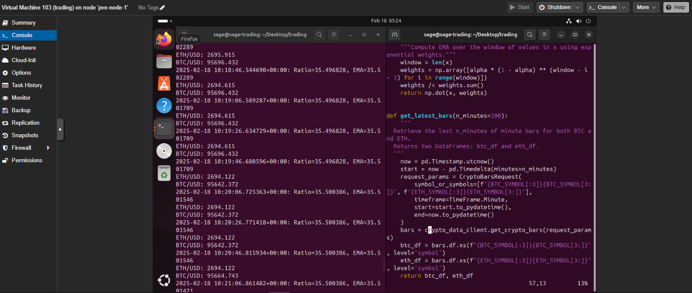
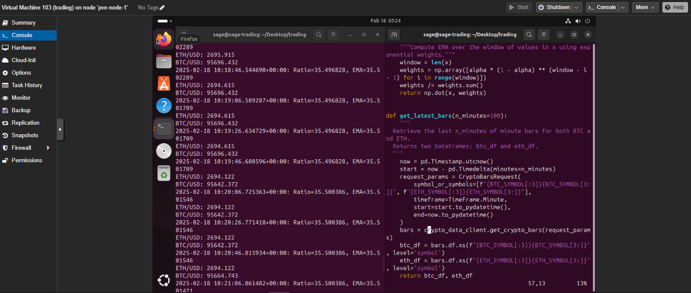

Overview
Recently, I have gotten into a hobby of researching and implementing my own algorithmic trading strategies. Besides the hopefully evident benefits of succeeding in this project, it has served as a good test on large scale time-series analysis and forecasting methods, as well as general manipulation of large data sets.
I have created a custom backtesting and strategy implementation framework because I was unsatisfied with most publicly available libraries, and have implemented a few basic indicators as well as a few custom ones. Currently, I am paper trading various basic strategies based on these indicators and hope to develop and learn more in the future.
These strategies are running on a high-uptime compute cluster; more details here.
Some books that have been helpful in my journey so far are:
- Quantitative Trading, How to Build Your Own Algorithmic Trading Business - Ernie Chan
- Reminiscences of a stock operator - John Wiley & Sons
- The Elements of Statistical Learning - Hastie, Tibshirani, Friedman
- Trading Volatility - Colling Bennett
Features
- Custom backtesting and strategy implementation framework written in Python
Technologies / Skills
Python (numpy, pandas, scikit-learn, pytorch), Analytical Modeling, Time-series analysis, statistics.
Future Work
I hope to take a deep dive into current theory behind markets; stochastic processes, game theory for example.